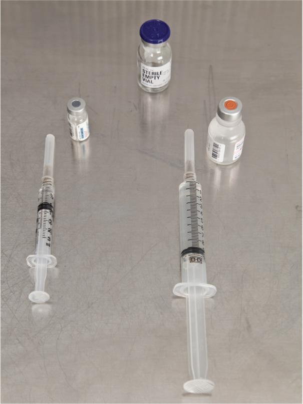
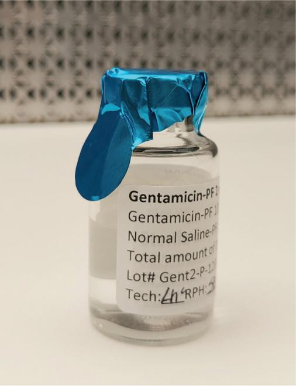
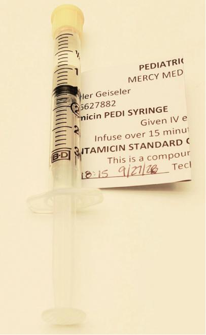

Part 2: Training
14.9 Preview the Procedural Lab
Now that you, as a sterile compounding student, have a basic understanding of the critical sites of supply items used in the preparation of pediatric CSPs, you have the opportunity to preview—and subsequently perform—the sterile compounding of a pediatric dilution using aseptic technique.
First, read the Preview the Procedural Lab section. Then carefully read each step of the Procedural Lab section. Next, reinforce your understanding by watching the demonstration video. Once you are in the lab, your instructor will demonstrate the procedure, and then you will perform the procedure by following the steps in the Procedural Lab section. After sufficient practice, you will complete the competency assessment that will be observed by your instructor.
Note: This procedural lab requires the use of a horizontal laminar airflow workbench. For pharmacies that do not have this type of PEC, sterile compounding personnel should consult the Instruction Guide provided by the PEC’s manufacturer or their facility’s SOPs to determine which procedures may need to be adjusted to suit their PEC.
Anteroom Preparatory Procedures
As you already know, the preparation for the sterile compounding process begins in the anteroom. This transition area provides a space for implementing the standard pharmacy procedures discussed in Chapters 5–8, including:
- verifying the CSP label against the medication order
- performing pharmacy calculations to determine type, size, and number of supply items needed
- gathering and staging supplies
- performing hand hygiene and garbing procedures.
Verifying the Pediatric Dilution Label
Prior to beginning pharmacy calculations for a pediatric dilution, you must compare the medication order to the patient-specific CSP label for the filled syringe to ensure the accuracy of the label. Although most facilities use CPOE systems that allow prescribers to input their medication orders, it is considered best practice for sterile compounding personnel to confirm the accuracy of order entry. Facilities vary as to how many staff members must be involved in this verification process. However, pediatric CSPs typically require two or three pharmacy staff members, including a pharmacist, to verify that the label matches the medication order. Implementing these repeated checks reduces the likelihood of a medication error.
To begin the verification process, you will check that the pediatric dilution label for PF gentamicin matches the standard concentration guidelines, if these standard concentrations have been adopted by your healthcare facility. These guidelines can be found in your facility’s SOPs and are commonly based on the ISMP’s Standard Concentrations of Neonatal Drug Infusions (see the subsequent Workplace Wisdom feature box) or the ASHP’s Standardize 4 Safety. You will also verify that the patient-specific CSP label (see Figure 14.5) contains other required label components, such as the pharmacy-assigned lot number and beyond-use date (BUD).

View long description Hide description
The label reads as follows: pediatric dilution, Mercy Medical Center. P F Gentamicin, Standard Concentration: 2 milligrams per milliliter, PF 0.9 percent Sodium Chloride. For IV administration only. Batch dilution for syringe preparation. Do not dispense vial to patient. Gentamicin standard concentration: 2 milligrams per milliliter. Pharmacy Lot number: PEDIGENT092023. This is a compounded preparation. At bottom: B U D, tech, and R P h.
Certain compounding procedures, such as preparing a filled syringe of PF gentamicin from a compounded pediatric dilution in an EEC, also require a patient-specific CSP label. This label contains the patient’s name, ID number, room number, and prescription number. Like the pediatric dilution label for the EEC vial, the patient-specific CSP label (see Figure 14.6) also has the name of the medication, dosage, and route of administration. (Note: The designation NICU preceding the room number indicates that this patient is in the neonatal intensive care unit.) Both the patient-specific information as well as the medication information must be verified against the prescriber’s medication order to ensure their accuracy.

View long description Hide description
The label reads as follows: pediatric patient, Mercy Medical Center, patient name, room, I D number, and R X number. Gentamicin PEDI Syringe 2.8 milligrams (1.4 milliliters). Given IV every 24 hour. Infuse over 30 minute via syringe pump. Gentamicin standard concentration: 2 milligrams per milliliter. This is a compounded preparation. At bottom: B U D, tech, and R P h.
A pharmacist who is verifying the information shown on the patient-specific CSP label in Figure 14.6 would check that the prescribed dose of 2.8 mg for this neonate is within the recommended PF gentamicin weight-based dosage range. The quick reference guidelines indicate that 4 mg/kg/day IV every 24 hr is appropriate for a neonate in the NICU. Using the patient’s weight indicated on the medication order (0.7 kg), perform a calculation to determine the dose in milligrams (mg).
\(\quad\quad\;\frac{4\text{ }\!\!~\!\!\,\text{ mg}}{1\text{ }\!\!~\!\!\,\text{ kg}}=\frac{x\text{ }\!\!~\!\!\,\text{ mg}}{0.7\text{ }\!\!~\!\!\,\text{ kg}}\)
\(\begin{matrix}
4\,\text{ }\!\!~\!\!\text{ }\times \text{ }\!\!~\!\!\,\text{ }0.7 & = & 2.8 \\
2.8/1 & = & 2.8\text{ }\!\!~\!\!\,\text{ mg} \\
x & = & 2.8\text{ }\!\!~\!\!\,\text{ }\mathbf{mg} \\
\end{matrix}\)
Performing Pharmacy Calculations
Once you have verified the accuracy of the patient-specific CSP label, you need to determine the type, size, and number of supply items needed for the procedure. Using information gleaned from the patient-specific CSP label and the label on each medication or additive, calculate the desired volume for each additive or ingredient to be used in the procedure. The desired volume is the volume that you must withdraw from the PF gentamicin standard concentration vial to deliver the dose ordered by the prescriber. In addition, you will need to perform a calculation to determine the volume of PF NS that you must draw up in a syringe in order to prepare the CSP. These pharmacy calculations must be verified by a pharmacist to ensure their accuracy.
WORKPLACE WISDOM
Many facilities use the List of Standard Concentrations of Neonatal Drug Infusions, published by ISMP and the Vermont Oxford Network, or the ASHP’s Standardize 4 Safety to develop standard concentrations for pediatric drugs. Facilities can use this information along with pediatric dosing information from manufacturer’s labeling to create quick reference guidelines for pharmacists. These guidelines assist pharmacists in the verification of a CSP label. The pharmacists check that the CSP meets the correct standard concentration and ensure that the dose prescribed for the patient is within the acceptable range for that drug. An example of this type of quick reference guideline for PF gentamicin is shown in the table that follows.
| Mercy Medical Center Quick Reference Guide for Common Neonatal and Pediatric Drug Administration |
||||
|---|---|---|---|---|
| Drug | Dosage Range | Concentration | IV Administration | Notes |
| PF gentamicin | Neonates in NICU: 4 mg/kg/day IV every 24 hr Infants: 2.5 mg/kg/day IV every 8 hr (Dosage varies based on drug levels.) |
2 mg/mL dilution* | 30 minutes | Serum levels with third to fourth dose. Obtain trough 30 minutes prior to dose, and obtain peak 30 minutes after the 30-minute infusion. Improper administration increases the risk of side effects (renal failure, hearing loss, vertigo). |
| *Pharmacy is to compound a 2 mg/mL standard concentration for pediatric dilution. | ||||
Gathering and Staging Supplies
After performing the calculations, place the pediatric dilution label and the patient-specific CSP label into separate, small plastic bags and seal them. Place the medication order into a large plastic bag and seal it. Gather and wipe down all of the necessary compounding supplies with an appropriate agent before bringing them into the clean side of the anteroom. (For detailed information on the USP <797> protocol for this anteroom procedure, refer to Chapter 10.)
Donning Garb
Now that you have assembled and wiped the exterior surfaces of necessary supplies, you must don garb, a requirement for working in the buffer room. Before donning garb, ensure you are wearing close-toed shoes and either a clean scrub uniform or other approved, lightweight, nonshedding clothing and that you have removed cosmetics, jewelry, and other items prohibited in the sterile compounding area. Then don shoe covers; a head cover and, if necessary, a facial hair cover; a face mask; and a gown. Apply an alcohol-based hand rub to all surfaces of your hands and fingers and allow the surfaces to dry before donning sterile gloves. (Note: This procedure may also be performed in the buffer room.)
Due to time constraints, you will not perform hand-washing procedures during this procedural lab. Keep in mind that, in sterile compounding practice, handwashing is mandatory and must be performed prior to donning sterile gloves. If you are performing this procedural lab in a working buffer room, you must perform all hand hygiene and garbing procedures before entering the buffer room. (For additional assistance on the procedure for donning garb, refer to Chapter 8 of this textbook.)
Buffer Room Preparatory Procedures
When preparing pediatric CSPs, sterile compounding personnel must diligently follow established buffer room procedures. These procedures, discussed in Chapters 8 and 9, may include:
- sanitizing hands with an alcohol-based hand rub
- donning sterile gloves
- cleaning and disinfecting the PEC.
Due to time constraints, you will not perform PEC cleaning and disinfection procedures during this procedural lab unless directed to do so by your instructor. Keep in mind that, in sterile compounding practice, PEC cleaning and disinfection procedures are mandatory and must be performed prior to beginning sterile compounding procedures and at intervals prescribed by USP <797>.
Arranging and Preparing Supplies in the PEC
Upon entering the buffer room, place the transport basket or tray onto a clean table or cart. If the transport vehicle used is a cart, wheel it so that it is positioned away from the PEC’s prefilter. If not performed previously, sanitize your hands with an alcohol-based hand rub, allow your hands to dry thoroughly, and then don sterile gloves.
Wipe your sterile gloves with sterile 70% IPA and allow your gloved hands to dry thoroughly. Next, use low-lint wipers to wipe the exterior surfaces of supply items with sterile 70% IPA and allow the items to dry before introducing the items into the PEC. If a supply item is in a sealed container to maintain its sterility, the sterile item should be removed from the container as the item is introduced into the PEC and should not be wiped.
Place small supply items—such as the vial, needle, syringe, sterile 70% IPA swabs, and tamper-evident, sterile, adhesive seals—in the outer six-inch zone of the PEC, which is used as a staging area prior to bringing the supplies into the direct compounding area (DCA) of the PEC. Alternatively, small supply items may be placed to the left or right of the DCA.
Pediatric Dilution Compounding Procedure, Part 1: Preparing a Pediatric Dilution in an EEC Vial
For the first part of this procedure, you will prepare a pediatric dilution in an EEC vial. The supply items needed for this procedure include one PF gentamicin 20 mg/2 mL vial, one PF 0.9% sodium chloride vial, sterile 70% IPA swabs, one 3 mL syringe, one 10 mL syringe, two regular needles, and one CSP vial label in a sealed plastic bag.
Once you have arranged the supply items in the outer six-inch zone, wipe your gloved hands with sterile 70% IPA and allow your gloves to dry. Then bring the PF gentamicin vial into the DCA. Remove the flip-top cap from the PF gentamicin vial, and place it into the start of a discard pile. Swab the vial stopper with sterile 70% IPA. Place the swab on the PEC’s work surface within the DCA.
Next, assemble the 3 mL syringe and capped needle in such a way as to avoid touch contamination and shadowing of the syringe tip and the needle hub. Remove the needle cap, and place it on the IPA swab. Be sure that the open end of the needle cap is pointing toward the PEC’s high-efficiency particulate air (HEPA) filter. Then use aseptic technique to insert the needle into the PF gentamicin vial. Perform the milking technique to withdraw the appropriate volume of PF gentamicin into the syringe and remove any bubbles. (Refer to Chapter 10 for the procedures used in the milking technique and in bubble removal from a syringe.) Carefully recap the needle of the filled PF gentamicin syringe, and position the syringe next to the PF gentamicin vial on the PEC’s work surface within the DCA.
Next, bring the PF NS (diluent) vial into the DCA, remove the flip-top cap, and place the cap into the discard pile. Swab the vial stopper with sterile 70% IPA. Assemble the empty syringe and capped needle aseptically, making sure to avoid touch contamination and shadowing of the syringe tip and the needle hub. Remove the needle cap and, with the open end pointing toward the HEPA filter, place the cap on the IPA swab.
Use aseptic technique to insert the needle into the PF diluent vial, and perform the milking technique to withdraw the appropriate volume of PF diluent into the syringe. Carefully recap the needle of the filled PF diluent syringe, and position the syringe next to the PF diluent vial on the PEC’s work surface, adjacent to the filled PF gentamicin syringe and vial. Ask for a verification check by a pharmacist.
After the verification check, wipe your gloved hands with sterile 70% IPA and allow your gloves to dry. Then bring the EEC vial within the DCA so that the vial receives uninterrupted airflow from the HEPA filter and is away from supply items that might create air turbulence.
Remove the flip-top cap of the EEC vial, and then open a new, sterile 70% IPA swab and wipe the vial stopper.

Remove the needle cap from the PF gentamicin syringe, and aseptically insert the needle into the EEC’s vial stopper. While keeping the EEC in contact with the PEC’s work surface, press down on the flat knob of the plunger to inject the PF gentamicin into the EEC vial. Remove your thumb from the flat knob of the plunger to allow air pressure from the EEC to be vented into the now-empty PF gentamicin syringe. Hold the syringe as you would a dart, and carefully remove the needle-and-syringe unit from the EEC. Place the needle-and-syringe unit into the sharps container.
Open a new, sterile 70% IPA swab and wipe the EEC’s vial stopper. Remove the needle cap from the PF diluent syringe, and aseptically insert the needle into the EEC’s vial stopper. Press down on the flat knob of the plunger to inject the PF diluent into the EEC vial. Vent air pressure from the EEC into the empty PF diluent syringe using the procedure described previously. Hold the syringe as you would a dart, and then carefully remove the needle-and-syringe unit and discard it into the sharps container.
Wipe sterile gloves with sterile 70% IPA and allow to dry thoroughly. Check the filled EEC for solution clarity and particulate matter. Finally, affix a CSP vial label to the pediatric dilution, write the BUD and your initials, and cover the EEC’s vial stopper with a tamper-evident, sterile, adhesive seal. Then temporarily set the pediatric dilution aside but keep within the DCA. You will use this CSP in Part 2 of this procedural lab.
Pediatric Dilution Compounding Procedure, Part 2: Preparing a Filled Syringe from a Pediatric Dilution in an EEC Vial
For the second part of this procedure, you will prepare a filled syringe from the pediatric dilution you just compounded in the EEC vial. This syringe will contain an individual dose of PF gentamicin for a neonatal patient. To begin, assemble the small supply items needed for the procedure in the outer six-inch zone of the PEC. These supply items include sterile 70% IPA swabs, one 3 mL syringe, one regular needle, one sterile syringe cap, and one CSP label in a sealed plastic bag.
Wipe your gloves with sterile 70% IPA and allow your gloved hands to dry. Start by removing the tamper-evident, sterile, adhesive seal from the top of the EEC vial. Open a new, sterile 70% IPA swab and wipe the vial stopper. Place the IPA swab on the PEC’s work surface in an area that receives uninterrupted airflow from the HEPA filter.


Bring a 3 mL syringe into the DCA and carefully remove the outer wrapper of the syringe. Place the outer wrapper of the syringe in the discard pile. Position the syringe in your hand to allow adequate airflow to the syringe tip, and then open the outer wrapper of the capped regular needle. Aseptically attach the capped needle to the syringe. Place the outer wrapper of the needle in the discard pile.
Next, remove the needle cap and place the cap on the IPA swab on the PEC’s work surface. Be sure that the open end of the needle cap is facing the HEPA filter. Using your one hand to brace the EEC vial against the PEC’s work surface, hold the needle-and-syringe unit like a dart with your other hand. Be sure that the needle bevel is pointing toward the ceiling. Then carefully insert the needle-and-syringe unit into the EEC vial. Use a clockwise motion to invert the vial so that it is above the needle-and-syringe unit. Pull down on the flat knob of the plunger until you have drawn up approximately 0.2 mL more than the desired volume (in this case, 1.4 mL). Use proper procedures to remove bubbles and push excess fluid back into the vial until you have exactly 1.4 mL remaining in the syringe.
Using a counterclockwise motion, return the vial with attached needle-and-syringe unit to the PEC’s work surface. Brace the vial against the work surface by holding it with the thumb and forefinger. Holding only the barrel of the syringe, remove the needle-and-syringe unit from the vial. Retrieve the needle cap from the PEC’s work surface, and carefully recap the needle. Temporarily place the filled syringe with attached, capped needle within the DCA.
Bring the sterile syringe cap into the DCA in an area that receives uninterrupted airflow from the HEPA filter. Hold the syringe cap in one hand and, without touching or shadowing the critical site of the syringe cap, use the fingers of your other hand to peel open the sterile package to expose the tip of the syringe cap. Hold the syringe cap so that it receives uninterrupted airflow from the HEPA filter. Then pick up the filled syringe and carefully remove the capped needle while avoiding touch contamination and shadowing of the critical sites of either the syringe or the syringe cap. Discard the used, capped needle into the sharps container. Wipe sterile gloves with sterile 70% IPA and allow to dry thoroughly. Aseptically attach the syringe cap to the filled syringe. Write the BUD and your initials on the patient-specific CSP syringe label. Then use the “flagging” method (discussed in the Practice Tip on the previous page) to attach the patient-specific CSP syringe label. Affix a tamper-evident, sterile, adhesive seal over the top of the syringe cap, and place the syringe into a plastic bag.
Upon completion of the pediatric dilution compounding procedure, discard the vials and supply items into the appropriate waste containers. Place the plastic bag with the labeled and capped syringe and any unused supply items into the transport vehicle and return the items to the anteroom. Record the BUD and your initials on the CSP label. Remove garb in the order and manner described in Chapter 8 of this textbook.